Lecture Notes (for reference only)
Path Wavelengths: Multispectral Imagery Analysis in Archaeology
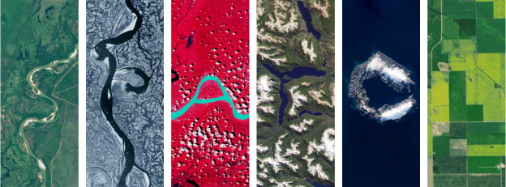
Before the Lecture
We will be using Google Earth Engine (GEE) throughout this week’s lecture and lab. Follow this page to create a Cloud project.
Google Earth Engine, not to be confused with Google Earth, features a multi-petabyte (\(10^{15}\) bytes) catalog of multisensor satelite imagery that allows cloud-based planetary-scale analysis.
Once everything is set up, you should be able to access the code editor that looks like this:
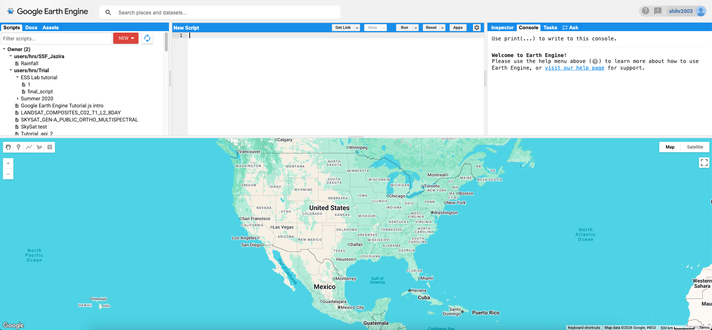
The Community Tier now gives 150 EECU-hours per month for free. While GEE used to require approval for access, registration is now instant.
Electromagnetic (EM) Spectrum
We see things because visible light reflects off objects and enter our eyes.
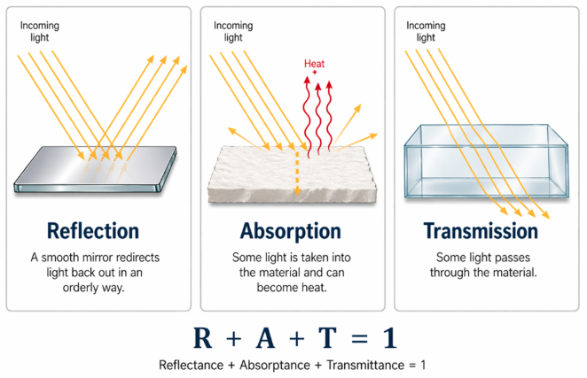
However, we can only see things of certain wavelengths (visible; or blue, green, red; ca. 0.4-0.7 micrometer or µm). What can a satellite see?
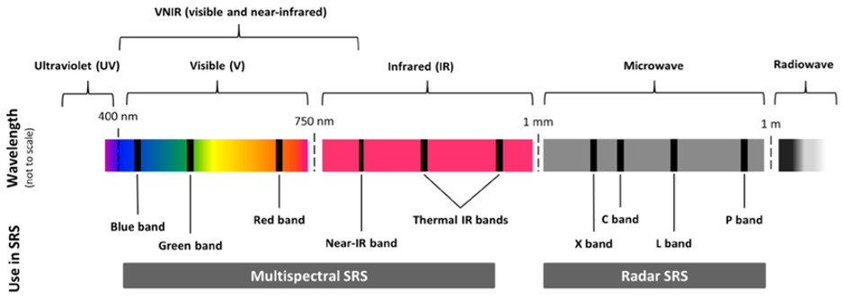
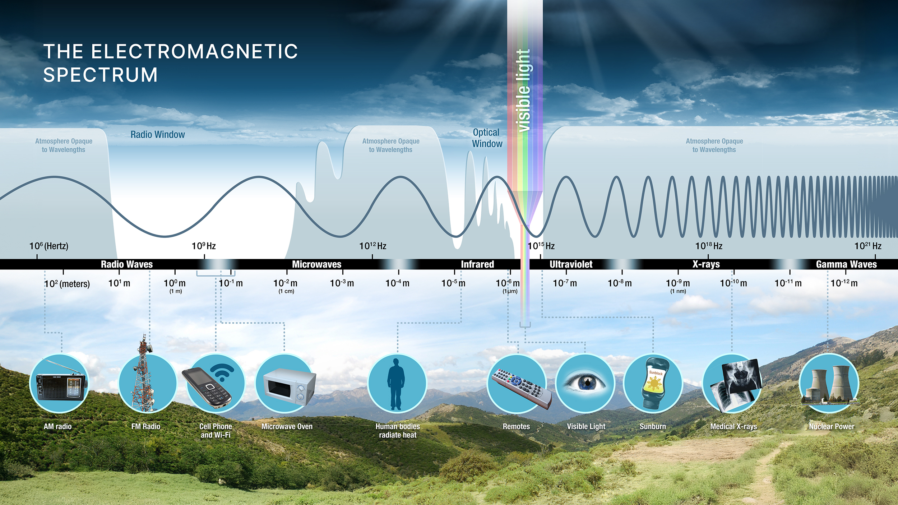
EM Energy as Wave and Particle
Electromagnetic (EM) energy travels as a wave, but it is absorbed and detected as discrete packs of energy (photons).
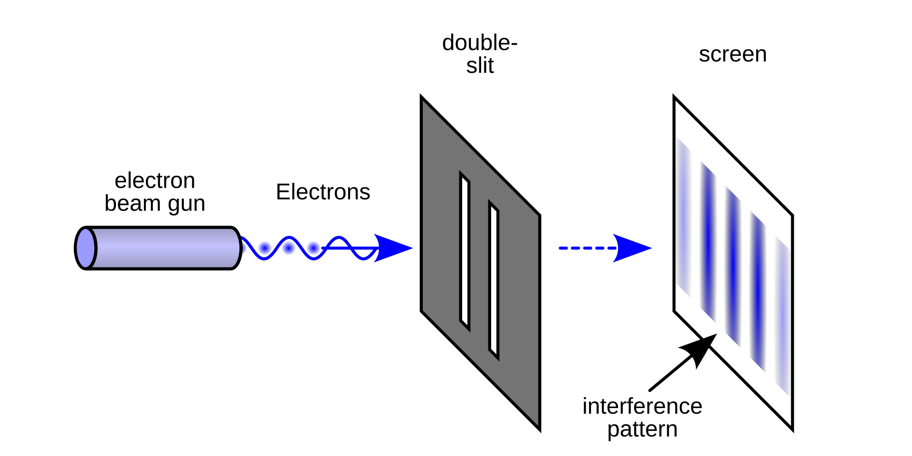
\[ c = \lambda\,\nu \qquad\qquad E = h\,\nu = \frac{h\,c}{\lambda} \]
- \(\lambda\) is wavelength and \(\nu\) is frequency; speed of light \(c = 3.00\times10^{8}\ \mathrm{m\,s^{-1}}\) and the Planck constant \(h = 6.63\times10^{-34}\ \mathrm{J\,s}\). A longer wavelength means less energy per photon.
- Wien’s law, \(\lambda_{max} \approx 2898\ \mu\mathrm{m\,K}\,/\,T\). The Sun (≈ 5,800 K) peaks near 0.5 µm and Earth’s surface (≈ 300 K) near 10 µm. Below ~3 µm (visible, NIR, SWIR), sensors record reflected sunlight; at 3–14 µm (TIR) they record emitted heat from the Earth.
Notable Spectral Windows
| Region | Wavelength | What is recorded |
|---|---|---|
| Visible (blue, green, red) | 0.4–0.7 µm | reflected sunlight; what the eye sees |
| Near-infrared (NIR) | 0.7–1.3 µm | reflected sunlight; vegetation |
| Shortwave infrared (SWIR) | 1.3–3 µm | reflected sunlight; water and mineral absorption |
| Thermal infrared (TIR) | 8–14 µm | heat emitted by the surface |
| Microwave | ~1 mm–1 m | radar echoes (active sensors) |
Passive and Active Sensors
Passive sensors (most satellite sensors) record what the Sun provides (either reflected or emitted as heat).
Active sensors (such as synthetic aperture radar, SAR) send their own microwave pulse and measure the echo. SAR works day and night and can penetrate most clouds.
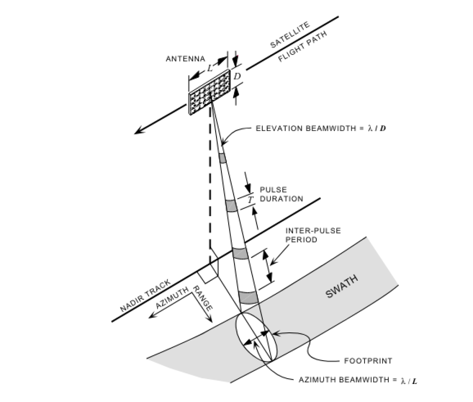
Spectral Signatures
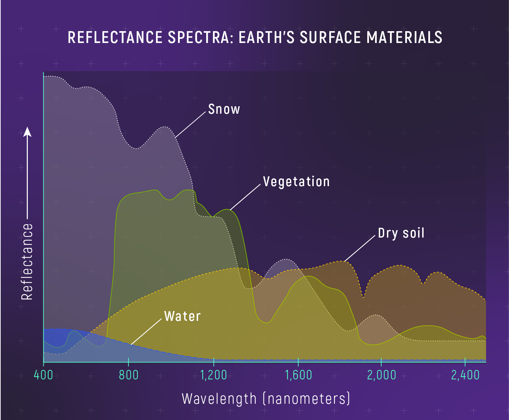
Vegetation: chlorophyll absorbs blue and red; leaf water absorbs SWIR.
Dry soil: Clay mineral absorbs near 2 micrometer.
Water: absorbs nearly everything beyond ~ green. What color in NIR and SWIR?
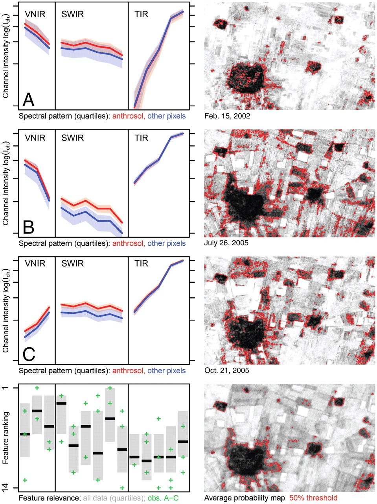
Which part of the spectrum best separates wet soil from dry soil?
You are designing an Earth-observation sensor to record surface reflectance in a blue band and a SWIR band. Given the spectrum and the equations above, what spatial resolution would you reasonably expect?
Band Composites
A raster can be visualized using three color channels, and a composite assigns any three bands to the display of red, green, and blue. By assigning different bands to these three channels, one can visualize the EM spectrum beyond visible.
| Composite | Landsat 8/9 (R-G-B) | What stands out |
|---|---|---|
| Natural color | 4-3-2 | what the eye expects |
| Color infrared | 5-4-3 | healthy vegetation in red; crop marks |
| Agriculture | 6-5-2 | moisture and crop differences |
| SWIR soils | 7-6-4 | soil and mineral differences; bright bare ground |
Now add different composites to GEE. Which composite makes the round Kranzhügel and its lower town stand out best?
// Step 3. Composites (Landsat 8/9 band numbers)
Map.addLayer(spring, {bands: ['SR_B5', 'SR_B4', 'SR_B3'], min: 0, max: 0.5}, 'Color infrared, 5-4-3', false);
Map.addLayer(spring, {bands: ['SR_B6', 'SR_B5', 'SR_B2'], min: 0, max: 0.5}, 'Agriculture, 6-5-2', false);
Map.addLayer(spring, {bands: ['SR_B7', 'SR_B6', 'SR_B4'], min: 0, max: 0.5}, 'SWIR soils, 7-6-4', false);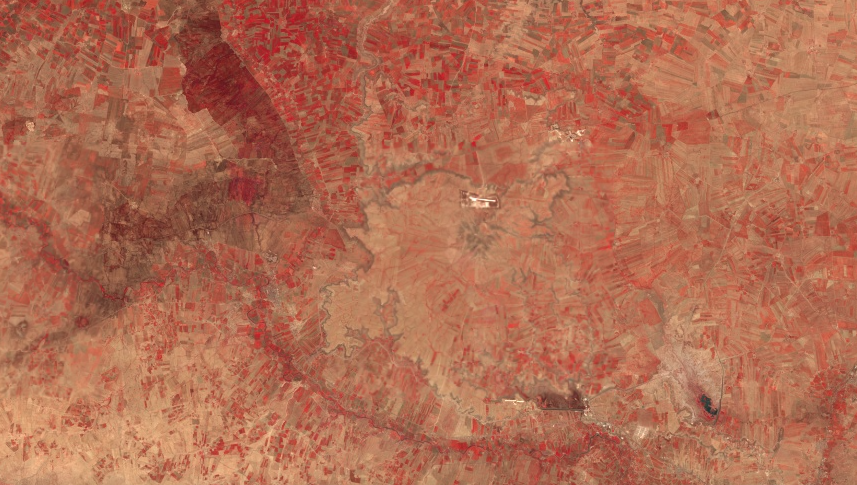
Spectral Indices
Spectral indices can help us compress two bands into one and eliminate much of the illumination/slope effects. Most indices follow a “normalized difference” template, which runs from -1 to 1:
\[ \mathrm{ND} = \frac{\rho_A - \rho_B}{\rho_A + \rho_B} \]
Here \(\rho\) is surface reflectance (0-1; important!) in bands A and B. Some common indices are as follows:
| Index | Formula | Landsat 8/9 bands |
|---|---|---|
| NDVI | (NIR − Red) / (NIR + Red) | 5, 4 |
| SAVI | 1.5 × (NIR − Red) / (NIR + Red + 0.5) | 5, 4 |
| NDMI | (NIR − SWIR1) / (NIR + SWIR1) | 5, 6 |
| Clay ratio | SWIR1 / SWIR2 | 6, 7 |
| NDWI | (Green − NIR) / (Green + NIR) | 3, 5 |
Luckily, GEE provides a function to calculate the normalized difference easily. Add the following code to your GEE code editor. Do you notice anything interesting?
// Step 4. Indices from the spring composite
var ndvi = spring.normalizedDifference(['SR_B5', 'SR_B4']).rename('NDVI');
var ndwi = spring.normalizedDifference(['SR_B3', 'SR_B5']).rename('NDWI');
var savi = spring.expression('1.5 * (NIR - RED) / (NIR + RED + 0.5)', {
NIR: spring.select('SR_B5'),
RED: spring.select('SR_B4')
}).rename('SAVI');
Map.addLayer(ndvi, {min: 0, max: 0.5, palette: ['brown', 'yellow', 'green']}, 'NDVI', false);
Map.addLayer(savi, {min: 0, max: 0.5, palette: ['brown', 'yellow', 'green']}, 'SAVI', false);
Map.addLayer(ndwi, {min: 0, max: 0.5, palette: ['white', 'blue']}, 'NDWI', false);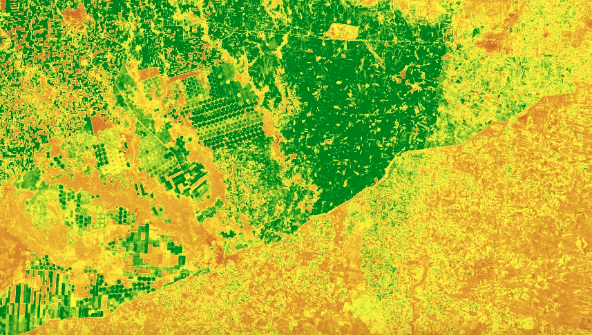
Timing
Menze and Ur (2012) classified 160 ASTER scenes from 2003–2007, where they averaged the probability maps to prevent seasonal variation. Can you further create an ee.ImageCollection named dryScenes from l89Here with filterDate('2024-08-01', '2024-11-01'), and compute its NDVI map? How does summer NDVI compare with the spring one?
Land Use and Land Cover (LULC) Classification
Bauer (2018) suggests that Iron Age and Early Historic Period residents in Maski, Northern Karnataka, used more water-retentive, clay-rich, blacker regur soils for agriculture, and observed greater social inequalities in later periods.
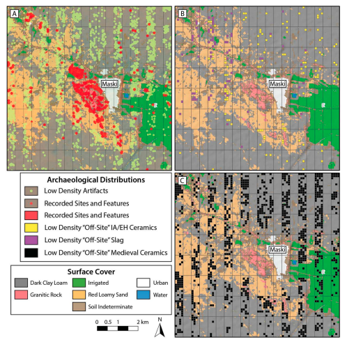
This work relies on Land Cover classification using multispectral data, which we can use GEE to generate today. There are usually two methods for LC classification.
Unsupervised Methods: k-means
Unsupervised methods (e.g. k-means) find clusters of similar pixels, and you will name the clusters afterwards. Try the following code in GEE. Are similar features correctly clustered?
// Step 5a. Unsupervised: k-means
var features = spring.select(['SR_B2', 'SR_B3', 'SR_B4', 'SR_B5', 'SR_B6', 'SR_B7'])
// Learn the clusters from 5,000 random pixels
var pixels = features.sample({region: aoi, scale: 30, numPixels: 5000, seed: 1});
var kmeans = ee.Clusterer.wekaKMeans(6).train(pixels);
var clusters = features.cluster(kmeans);
Map.addLayer(clusters.randomVisualizer(), {}, 'k-means, 6 clusters');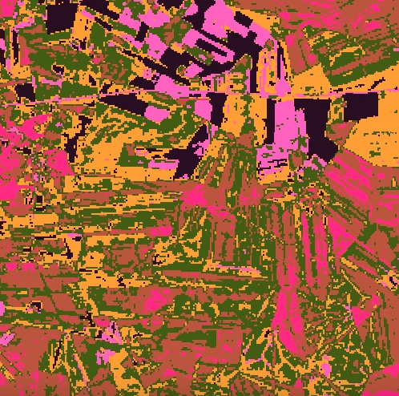
Supervised Methods: Random Forest with Three Classes
Supervised methods (maximum likelihood, random forest, support vector machines, deep learning) start from training examples that you provide.
In GEE, turn off all layers except for the basemap. Hover over Geometry Imports (top left of the map view) and click + new layer. If there is no Geometry Imports option, select Add a marker .
Click the gear icon next to the new layer. Name it developed, set Import as to FeatureCollection, click + Property, and add class = 0 like below. Choose red for this class.
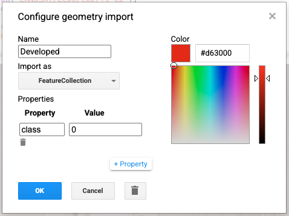
With developed selected, use the point tool to select at least 30 pixels that represent “developed” land cover, such as roads, houses, ancient buildings, etc. You should try to include as many varieties and be as precise as possible. Avoid sampling mixed pixels!
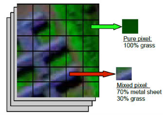
Repeat for vegetation (class = 1: fields that are green in spring, trees, etc.) and bare (class = 2: bare soil, rocks, etc.).
After you are done, run the following code:
// Step 5b. Supervised: random forest
var trainingPoints = developed.merge(vegetation).merge(bare);
var training = features.sampleRegions({
collection: trainingPoints,
properties: ['class'],
scale: 30
});
print('Training pixels per class:', training.aggregate_histogram('class'));
var rf = ee.Classifier.smileRandomForest(100).train({
features: training,
classProperty: 'class',
inputProperties: features.bandNames()
});
var classified = features.classify(rf);
Map.addLayer(classified, {min: 0, max: 2, palette: ['red', 'green', 'yellow']},
'Random forest: developed / crop / bare');Compare results between two classification methods; how is Tell Beydar classified?
Confusion Matrix
To evaluate the accuracy of his classification, Bauer (2018) used a confusion matrix:
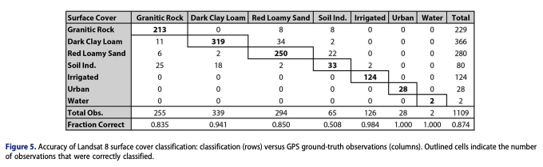
This helps evaluate his classification. Four common metrics are given here, where TP, TN, FP, and FN denote true positive, true negative, false positive, and false negative.
\[ Accuracy = \frac{TP+TN}{TP+TN+FP+FN} \] \[ Precision = \frac{TP}{TP+FP} \] \[ Recall = \frac{TP}{TP+FN} \] \[ F1 = \frac{2*Precision*Recall}{Precision+Recall} = \frac{2*TP}{2*TP+FP+FN} \]
Note that precision is also called user’s accuracy or consumer’s accuracy, whereas recall is also known as producer’s accuracy or sensitivity.
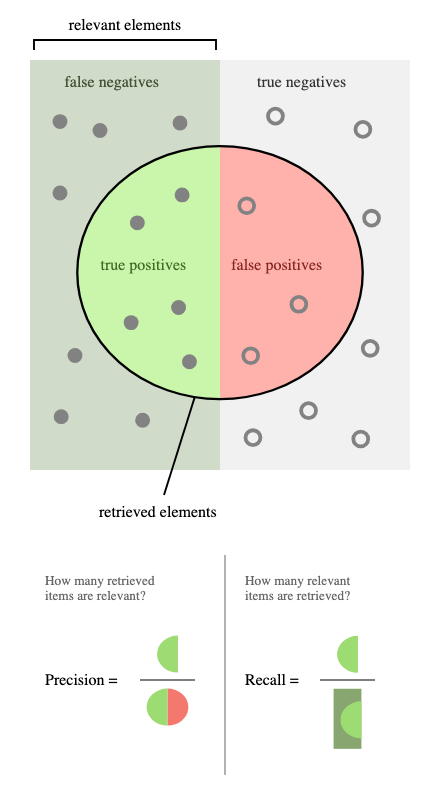
Menze and Ur (2012) mention that settlement signals covered about 4% of their search area. Which metrics are best for evaluating their archaeological detection?
Now let us check the metrics for your supervised classification.
// Step 6: sample the map where the drawn points are
var check = classified.sampleRegions({
collection: trainingPoints, // the drawn points, not 'training'
properties: ['class'],
scale: 30,
geometries: true
});
print('Your label (class) vs map (classification): 0 developed, 1 vegetation, 2 bare', check);Change Detection
For Landsat, we can compare how different indices or LULC have changed over the same season of different years. We can also subtract an index at date 1 from the same index at date 2. For a true time series, where computations are applied to every pixels, try the following code using MODIS data over the past 26 years.
// Step 7: Change detection using MODIS
var modis = ee.ImageCollection('MODIS/061/MOD12Q1')
.filterDate('2000-01-01', '2026-01-01')
.select('NDVI');
print(ui.Chart.image.series({
imageCollection: modis,
region: aoi,
reducer: ee.Reducer.mean(),
scale: 250
}).setOptions({title: 'Mean NDVI around Tell Beydar'}));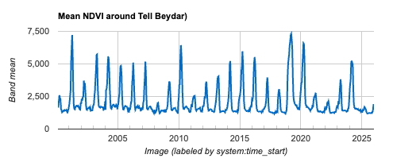